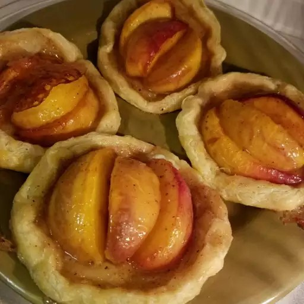

Peach Tartlets

Description
A ham and cheese sandwich is a classic and satisfying choice. It features slices of ham and cheese between bread, often with additional toppings like lettuce, tomato, or condiments for extra flavor.
Ingredients
- ¼ cup sugar
- 1 egg, beaten
- ¼ teaspoon Chinese five-spice powder
- 1 teaspoon water
- 2 tablespoons butter
- 3 large peaches, each cut into 8 wedges)
- 1 (15 ounce) package refrigerated pie pastry
Steps
- Preheat oven to 375 degrees F (190 degrees C). Line a baking sheet with a silicone baking mat.
- Whisk sugar and Chinese five-spice powder together in a small bowl. Beat egg and water together in another bowl.
- Melt butter in a large skillet over medium heat. When the butter foams, arrange peaches in a single layer in the skillet. Pour sugar mixture over the peaches; cook, turning peaches once, until sugar is melted, bubbling, and syrup has a tan color, about 2 minutes. Transfer peaches and syrup to a bowl to cool completely.
- Cut pie crusts into eight 4 1/2-inch rounds. Set rounds on prepared baking sheet and fold edges of each crust up to form a 1/2-inch rim. Brush each crust with egg mixture.
- Place 2 peach slices, pit-sides facing each other, in the center of each tart. Place 1 peach slice in center, skin-side up, in between the other two peaches. Drizzle excess syrup over the peaches.
- Bake in the preheated oven until golden and bubbling, about 15 minutes.